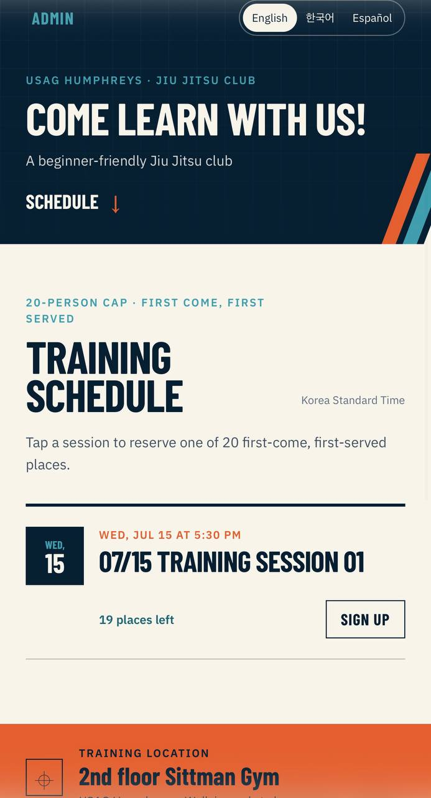
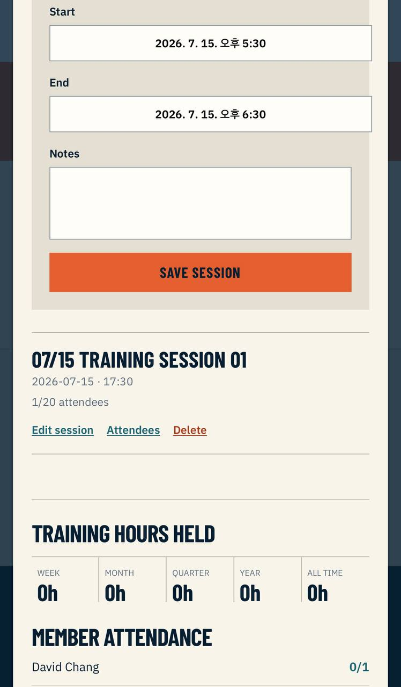

2ID Jiu Jitsu Club
Training scheduler & club administration
Available at: 2-id-jiu-jitsu-club.vercel.app
Issue / Solution
The Issue: Our KATUSA Brazilian Jiu-Jitsu club at USAG Humphreys was scheduling sessions and tracking who showed up over group chats and paper rosters. Sign-ups were hard to cap, contact lists were scattered across messages, and there was no reliable way to see attendance or total training hours over time. Because the club mixes Korean soldiers, American soldiers, and Spanish-speaking members, plain Korean or English announcements also left people out.
The Solution: I built 2ID Jiu Jitsu Club, a mobile-first scheduling and administration site that is actively used to run the program. Members sign up for a class in seconds with no account, and a strict twenty-person cap is enforced at the database level so a class can never be overbooked. Coaches get an admin dashboard to create sessions, pull attendee contact lists, mark attendance, and read training-hour analytics. Everything ships as a small, low-maintenance Vercel deployment on a SolidJS + FastAPI + Neon Postgres stack, with the whole interface available in English, Korean, and Spanish.
Overview
2ID Jiu Jitsu Club is a full-stack web app for the USAG Humphreys 2ID KATUSA Jiu Jitsu Club. It serves two audiences from one deployment: members, who browse the upcoming schedule and reserve a spot without logging in, and coaches, who manage sessions and attendance behind a password-protected admin panel. The public side also carries the gym location, conduct standards, and contact info, each presented in English, Korean, and Spanish.
The app is in active use to schedule sessions and take care of trainees. It is built deliberately small: a single Vercel deployment bundles the SolidJS frontend and the FastAPI backend, and a serverless Neon Postgres database keeps hosting essentially free while still enforcing real transactional guarantees.
System Architecture
The system is designed around one bundled Vercel deployment: a static SolidJS single-page app talks to a FastAPI serverless function, which owns all business rules and is the only thing that touches the database. Serverless Neon Postgres provides transactional storage.
System Architecture
What I Built
- A SolidJS + TypeScript + Vite single-page app with a public schedule, a no-account sign-up dialog, and a separate admin panel.
- A FastAPI backend exposing public session/sign-up routes and JWT-protected admin routes, deployed as one Vercel serverless function alongside the static frontend.
- A twenty-person, first-come first-served capacity limit enforced inside a Postgres transaction so concurrent sign-ups can never overbook a class.
- Duplicate-sign-up protection using a normalized phone number that is unique per session.
- An admin dashboard to create, edit, and delete sessions, view per-session attendee contact lists, and mark attendance.
- Training analytics: attendance versus registration by member, plus completed training hours for the week, month, quarter, year, and all-time.
- Full trilingual UI (English, Korean, Spanish) covering location, conduct standards, messaging, and contact info.
Member Workflow
A member opens the site on their phone, reads the club rules and location in their own language, and taps a class on the schedule. A sign-up dialog asks only for a name and phone number, so there is no account to create or password to remember. The backend opens a transaction, locks that session row, counts existing sign-ups, and either confirms the spot or returns a "class full" response the instant the twentieth seat is taken. If the same phone number is already registered for that class, the request is rejected instead of creating a duplicate.

Coach Workflow
A coach signs in through the admin login to receive a short-lived JWT, then works from the admin dashboard. From there they create sessions with a title, start and end time, and notes; edit or delete them; and open any session to see the full roster with contact details for reaching members directly. During or after class they mark who attended, and the stats view rolls that data up into attendance-versus-registration figures per member and total completed training hours across weekly, monthly, quarterly, yearly, and all-time windows.

Implementation
The backend is a single FastAPI application that owns every business rule; the SolidJS
client only renders state and calls the API. Public routes list sessions and accept
sign-ups, while admin routes for creating sessions, reading rosters, and marking
attendance sit behind a require_admin dependency that validates the JWT
issued at login. Data lives in two tables: sessions (title, start/end
times, notes, with a check that the end is after the start) and signups
(name, phone, a normalized phone for de-duplication, an attended flag, and a foreign key
that cascades on session delete).
The capacity rule is the core correctness guarantee. Rather than counting sign-ups in
application code and hoping two requests do not race, the sign-up path runs inside a
Postgres transaction: it takes a row lock on the target session with
SELECT ... FOR UPDATE, counts current sign-ups, and only inserts if the
count is below twenty — otherwise it raises a "session full" error that the API
returns as a 409. Because the lock serializes concurrent sign-ups for the same class,
the twenty-seat cap holds even under a rush of simultaneous requests. Analytics are
computed from completed sessions by summing each session's duration in hours and
bucketing it into the current week, month, quarter, year, and all-time totals.
Deployment
The whole project ships as one Vercel deployment: the SolidJS build is served as static
assets, and the FastAPI app runs as a serverless function handling every
/api route. It is wired to a serverless Neon Postgres database provisioned
through the Vercel marketplace, with the connection string, admin credentials, and JWT
secret supplied as environment variables. Python pytest, the frontend test
suite, and a production build run before deploy to keep the small footprint reliable.
Stack
SolidJS, TypeScript, Vite, FastAPI, Python, PostgreSQL, Neon, JWT, Vercel (serverless functions), pytest.